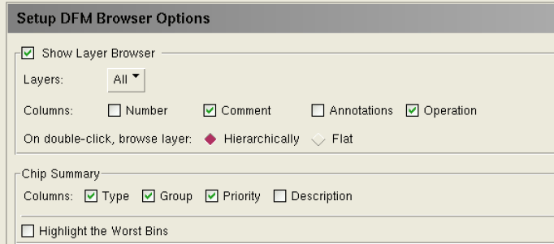
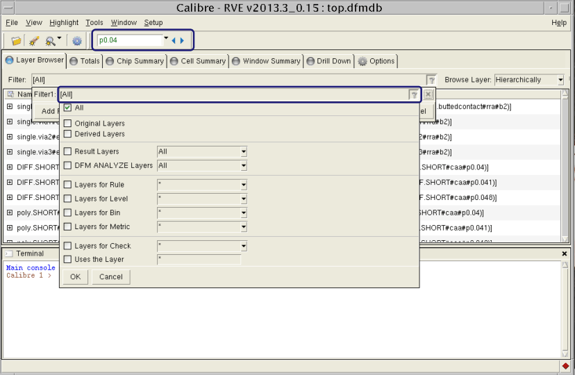

The Layer Browser tab displays a table of data read from your DFM database. Each table row contains a different layer and is divided into columns that show the layer number, its name, a comment (if one exists) and an expandable tree containing the operation(s) that derived it. Options you can access in enable you to control how layer data is displayed. Refer to “Setup DFM Browser Options Pane” in the Calibre RVE User’s Manual for a list of settings.

You can use the Search and Filter features to quickly locate layers of interest in the Layer Browser tab:

To find a layer, enter a string in the text field next to Find and press the icon. You can scroll through previous occurrences of the string using the icon. To match the case of the string or use regular expressions, choose Match Case or Regex from the dropdown menu, respectively. The results are returned for strings in any visible column (starting with the left-most one).
The Filter menu allows you to show or hide specific types of layers. Its options are described in Table 1.
Filter Name |
Description |
|---|---|
All |
Displays all layers. |
Original Layers |
Displays only original layers. |
Derived Layers |
Displays only derived layers. |
Result Layers |
Displays only result layers (in most cases, these layers are created with a DFM operation). |
DFM Analyze Layers |
Displays only layers created with the DFM Analyze operation. |
Layers for Specific Rule |
Displays all layers for which the DFM_RULE annotation exists and the value of the annotation matches the string specified in the text field. Wildcards (*) are supported. |
Layers for Specific Level |
Displays all layers for which the DFM_LEVEL annotation exists and the value of the annotation matches the string specified in the text field. Wildcards (*) are supported. |
Layers for Specific Bin |
Displays all layers for which the DFM_BIN annotation exists and the value of the annotation matches the string specified in the text field. Wildcards (*) are supported. |
Layers for Specific Metric |
Displays all layers for which the DFM_METRIC annotation exists and the value of the annotation (which is normally a list of metrics) matches the string specified in the text field. Wildcards (*) are supported. |
Layers for Check |
Displays all layers that are the result of the check. |
Uses the Layer |
Display all layers that were created using the specified layer. Wildcards (*) are supported. |
To apply the filter, choose the desired settings and click OK. The layer list updates to match the chosen settings.